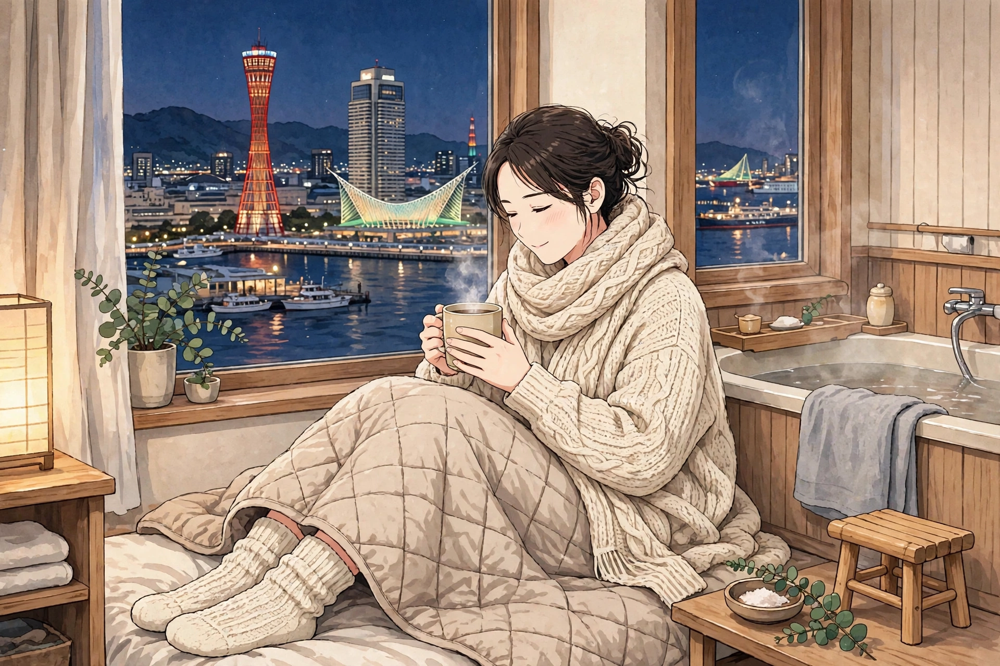

三ノ宮で五月病的なだるさに気になる全身の疲労感｜要因の整理とセルフケア、受診の目安セルフケア

連休明けに重く感じやすいのはなぜ — 五月病的なだるさの見方
連休が明けた5月の三ノ宮は、4月の張りつめた空気から少し解き放たれたように感じられます。センター街のアーケードを行く買い物客の流れは連休前より落ち着き、フラワーロードを歩く人の足取りにも、年度初めのせわしなさが薄れてきました。新しい職場や役割に気を張って過ごした4月を終え、連休でひと息ついたあと、ふだんの生活へ戻ったとたんに「体が重い」「朝、布団から起き上がりにくい」「何をするにも気が進まないように感じる」といった全身の疲れを覚える――そんな方へ、この記事では五月病と呼ばれる時期に気になりやすいだるさについて、三ノ宮での過ごし方とあわせて、背景の整理と日々のケア、相談する目安をまとめます。
「五月病」という呼び方は、正式な病名ではありません。4月に入った新しい環境に少しずつ慣れてきた5月ごろ、だるさや気の進みにくさを覚える状態を指す通称として、広く使われている言葉です。表れ方としては、朝の起き上がりがつらく感じられる、体全体に重だるさがある、肩や首まわりが張っている、眠ってもすっきりした感じがしない、集中が長く続かない、気持ちがざわつく、といったものが挙げられ、どれくらい気になるかは人によって違います。4月は新しい人間関係や仕事の進め方に気を配り、知らず知らず緊張が続く時期です。連休でいったん緩んだあと、ふだんのリズムへ戻ったときに、その反動が出るように感じられる場合もあるとされます。季節の変わり目に表れやすい心身の重だるさについては、ブログ記事三ノ宮で季節の変わり目に気になる心身の重だるさ｜要因の整理とセルフケア、受診の目安でも整理しています。五月病的なだるさは、季節のゆらぎと新しい環境になじむまでの疲れが重なって感じられる場合があるとされます。原因を一つに決めつけず、考えられる背景と付き合い方を見ていきます。
だるさの背景にありそうなこと
背景は一つだけとは限らず、いくつかの事情が重なって感じられる場合があるとされます。新しい職場や部署で人間関係や仕事の進め方に気を遣い続けたこと、覚えることが多かった4月の緊張が連休明けにゆるんだ反動として出てきたこと、連休中に夜更かしや起床時刻のずれが続き、生活リズムが崩れたことなどが、関わる場合があるようです。
ほかにも、連休中の旅行や帰省で長く移動した疲れが、連休明けに出てくる場合もあるとされます。5月は気温差が大きく、初夏の日差しも強まる時期で、体が体温の調整に働き続けていることや、海からの風が強い日に体が冷えたように感じること、浅い睡眠が続いていること、緊張と休息の切り替えがうまくいかない状態が続いていることも、重なる場合があるようです。東洋医学では、こうした全身のだるさを、気・血・水の巡りのバランスの変化として捉えてきた考え方もあります。気になる日の過ごし方を簡単にメモしておくと、ご自身で気になりやすい条件を振り返る手がかりになります。
三ノ宮の街歩きにのせた日々のケア
連休明けは起床時刻がずれやすいので、休日も大きくずらさないよう心がけることが、まず取り入れやすい工夫の一つです。目覚めたらカーテンを開けて朝の光を部屋に入れ、起き上がる前に布団の中で背伸びをし、肩を大きく回したり胸を開いて深呼吸をしたりする小さな動きを挟むことも、朝の始め方として考えられます。こうした小さな積み重ねが、翌朝の体の様子に関わることもあります。
日中は、センター街やフラワーロードを行く用事のついでに、無理のない範囲で一駅分歩く時間を作ることも考えられます。日差しの強い日はアーケードの下を歩き、海側へ出るときは風の強さに合わせて首元や足首を冷やさない服装を選ぶ工夫も参考になります。北野方面の坂道へ出かけるときは、足元に気をつけながら自分の歩幅でゆっくり上るのが無理のない進み方です。旧居留地の石畳を歩くときも、急がず自分のペースで進みましょう。仕事や家事の合間には席を立って軽く歩いたり、両腕を大きく伸ばしたりする時間をはさむことも、同じ姿勢が続いた体を動かすきっかけになります。
帰宅後の夜は、まず照明を少し落とし、寝る前のスマートフォン時間を短くすることから始めてみてください。湯船につかって首元まで温めたり、温かい飲み物をゆっくりとったりする過ごし方も、夜に取り入れやすいケアの一つです。予定を詰め込みすぎず、体を休ませる時間を入れることも大切です。無理のない範囲で、一つか二つ選ぶところから始めてみてください。
連休明けの一週間は、4月と同じ速さで一気に詰め込まず、優先する用事を一つか二つに絞る進め方が取り入れやすい工夫です。重い用事は午前中に片づけて午後は軽めの作業にし、帰宅後は仕事のことを持ち込まない時間を作る――そんな区切りが、緊張と休息の切り替えのきっかけになります。体が重く感じる日は、無理に気分を上げようとせず、早めに休む準備をすることも一つの選択肢です。
医療機関への相談を考えたいサイン
次のような様子があるときは、自己判断で様子を見続けず、内科や心療内科などの医療機関への相談をご検討ください。だるさや疲労感が2週間以上続く、日常生活や仕事に支障が出ている、気持ちの落ち込みが強い、動悸やめまい、息苦しさ、胸の痛み、手足のしびれなど気になる症状を伴う、発熱や思い当たる理由のない体重の大きな変化を伴う、眠れない日が続いている――こうした場合です。全身の疲労感は、さまざまな体の変化で表れる場合もあるとされるため、原因を一つに決めつけずに相談することが目安になります。
受診の際に伝えるとよいことを、事前にメモしておくと役立ちます。だるさを感じる時間帯（朝起きたとき・夕方・一日を通して）、だるさの感じ方、続いている期間、4月からの環境の変化の様子、睡眠の様子を書き留めておくと、医師に伝えやすくなります。当店の施術はリラクゼーションを目的としたもので、症状の診断・治療を行うものではありません。気になる症状があるときは、まず医療機関で相談したうえで、日常のケアの一つとしてサロンのご利用をお考えください。
三ノ宮でだるさが気になるときに
ステラスピカは、JR三ノ宮駅東口から徒歩5分、神戸市中央区琴ノ緒町2-3-5 ネオダイキョー三宮606号室にある女性専用の完全個室サロンで、開院済みです。料金はオイルマッサージ＋美容整体の90分コース10,000円（税込）のみ、営業時間は月〜土17:00〜22:00（日曜休み）、完全予約制です。施術歴30年の施術者が、施術前にはカウンセリングで当日の体調と気になる部位をうかがい、施術後にはセルフケアのポイントをお伝えします。ご予約はLINE公式アカウントから承っています。五月病的なだるさが気になるときは、無理のない日程でご相談ください。
ステラスピカ（三ノ宮） — 女性専用、90分 10,000円、月〜土17:00〜22:00、完全予約制です。